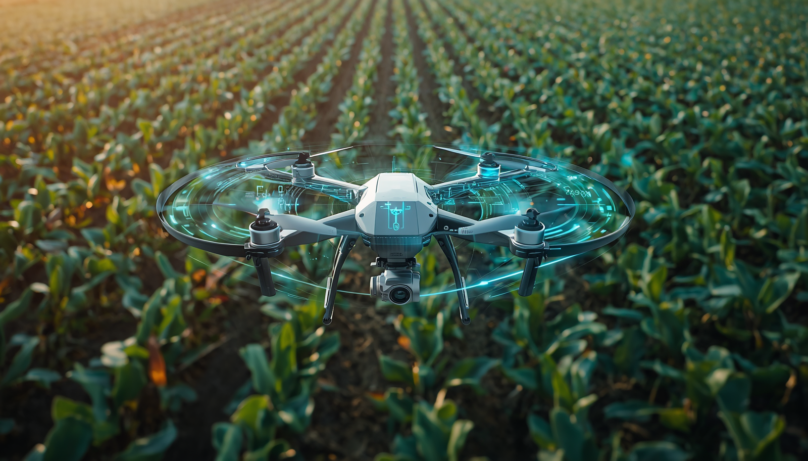
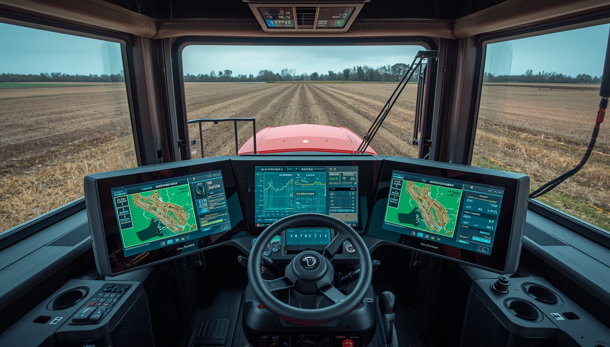

A agricultura sustentável ganha espaço no debate global em um momento de pressão sobre custos, segurança alimentar, energia e mudanças climáticas. Segundo Luciana Gorab, especialista em Planejamento Estratégico de Vendas, esse cenário coloca o Brasil em posição de destaque por unir produtividade, inovação e capacidade de adaptação no campo.
Enquanto temas como inteligência artificial, guerras comerciais e a nova corrida energética dominam parte das discussões internacionais, uma transformação menos ruidosa vem fortalecendo o papel brasileiro na inovação agrícola. O avanço de tecnologias baseadas no uso de microrganismos nas lavouras mostra como o país pode contribuir para reduzir a dependência de fertilizantes químicos, um dos insumos mais caros e sensíveis da produção de alimentos.

O Ouro Verde da Microbiologia
O trabalho da microbiologista brasileira Mariangela Hungria ganhou projeção internacional após décadas dedicadas ao desenvolvimento de bactérias capazes de substituir parte dos fertilizantes industriais. Na prática, esses microrganismos capturam nitrogênio diretamente do ar e o transferem para as plantas, ampliando a eficiência produtiva e reduzindo a necessidade de insumos nitrogenados.
Esse ponto tem peso estratégico. Fertilizantes nitrogenados dependem fortemente de gás natural, recurso sujeito a oscilações de preço, tensões geopolíticas e aumento dos custos energéticos.
Nesse contexto, a tecnologia brasileira passa a ser vista como uma alternativa que combina ganhos de produtividade, sustentabilidade, redução de custos e aplicação tropical em escala global. O reconhecimento internacional veio com o World Food Prize, frequentemente chamado de Nobel da Agricultura.
Mais do que uma premiação, o destaque reforça uma mudança de percepção sobre o Brasil, que deixa de ser visto apenas como exportador de commodities e passa a ocupar espaço como protagonista em tecnologia agrícola sustentável.
“Num planeta preocupado com segurança alimentar, inflação e mudanças climáticas, talvez uma das soluções mais sofisticadas do século esteja justamente onde o Brasil sempre foi forte: no campo. Porque, às vezes, o verdadeiro ouro não está no solo. Está na inteligência de quem aprende a trabalhar com ele” — conclui Luciana Gorab.

Quais os principais benefícios da Inteligência Artificial no campo?
A agricultura está passando por diversas transformações à medida que vai se modernizando e adotando inovações tecnológicas. A Inteligência Artificial (IA) faz parte desse movimento e promete revolucionar o setor. Ela permite a otimização do uso de recursos no campo, além de permitir a automatização de processos complexos, contribuindo para o aumento da eficiência, produtividade e sustentabilidade das operações.
Diante de recursos naturais finitos e mudanças climáticas, contar com inovações como a Inteligência Artificial é uma peça-chave para se destacar nesse mercado e continuar expandindo os negócios.
Um dos principais benefícios da IA no campo é a possibilidade de economizar a utilização de recursos naturais. É possível contar com sistemas de irrigação inteligentes, sensores e sistemas que monitoram constantemente as condições do solo e das plantas, ajustando a irrigação de acordo com a necessidade real das culturas, o que reduz o desperdício de água e melhora a saúde das plantas.
Além disso, é possível realizar análises de dados capturados por sistemas de IA para verificar a composição do solo, as necessidades específicas da cultura, entre outras características que ajudam na otimização de recursos.
A tecnologia de sensores e drone também tem contribuído para a evolução digital do campo. Por meio de equipamentos, como drones equipados com câmeras dotadas de sensores RGB e multiespectrais, é possível capturar imagens detalhadas das culturas que podem ser processadas por sistemas IA.
Através disso, é viável captar imagens para detectar prontamente indícios de infestação por ervas daninhas, incidência de doenças e outros contratempos agrícolas. Além disso, permite-se o planejamento preciso do sentido de plantio, utilizando curvas em nível e implementando bordaduras estratégicas. Do mesmo modo, facilita-se o replantio com mapeamento preciso de linhas e falhas, assegurando paralelismo e ajustes na aplicação em taxa variável.
Como a IA possibilita a análise de dados climáticos, históricos de produção e outras variáveis para prever o rendimento das colheitas. Isso ajuda os agricultores a planejar melhor suas atividades, otimizar a logística de colheita e minimizar perdas. Além disso, previsões mais precisas permitem que os agricultores ajustem suas práticas agrícolas para maximizar a produtividade e reduzir seus custos.
Contar com tratores, pilotos automáticos e outras máquinas agrícolas autônomas tem sido uma grande vantagem no campo, pois elas podem realizar tarefas como plantio, colheita e pulverização com alta precisisão. Com o avanço da digitalização do campo, esses maquinários podem ser equipados com sistemas de navegação por GPS e sensores avançados para, assim, reduzir a necessidade de mão de obra intensiva e aumentar a eficiência operacional.
A implementação de sistemas de inteligência artificial representa um avanço significativo na agricultura contemporânea, permitindo monitorar a qualidade dos produtos agrícolas desde o campo até a mesa do consumidor. A aplicação seletiva em taxa variável reduz o estresse das plantas ao otimizar o uso de insumos agrícolas.
A Inteligência Artificial possibilita a rastreabilidade de cada etapa da cadeia de suprimentos, desde a fazenda até a casa do consumidor, o que possibilita um enorme avanço na transparência.
Outro ponto importante na agricultura é a capacidade de minimizar os desperdícios de recursos naturais e insumos agrícolas. Nesta questão, a IA